2 Add a text-only Information page and Consent question
Every study should start with an information page, where participants can give informed consent, or opt out.
Q00 has been created as a long free text entry question, but you can change it to just display text, and then follow it with a simple Yes/No question. Click the green Edit button to change these details. When you do , you will see this:
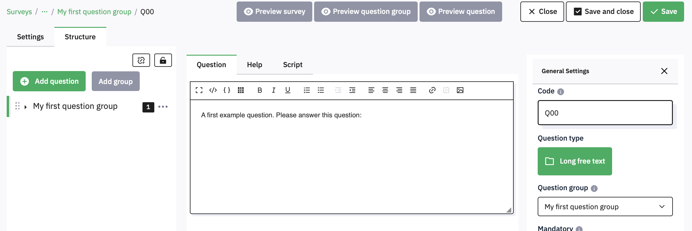
2.1 Creating a text only question
First, edit the Code box to change the name of the question from Q00 to InfoText. Then click the green Long free text under Question Type, and from the pop up under Mask Questions select Text Display and then click the Select button.
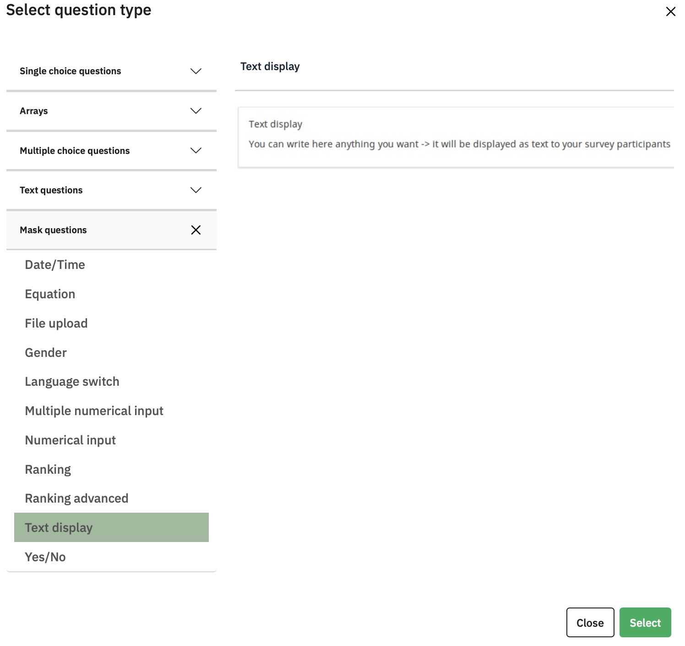
This popup shows you the large range of different question types you can choose between, with whatever you have chosen previewed on the right.
In Appendix 1 is an example of some text you might want to include in a structured consent page. You can also find a copy of this alongside this guide on the DLE
Paste the text into the box where it says ‘A first example question. Please answer this question’. You can use the icons at the top of the box to format the text. If you click the little grid icon you’ll see the full range of formatting available.
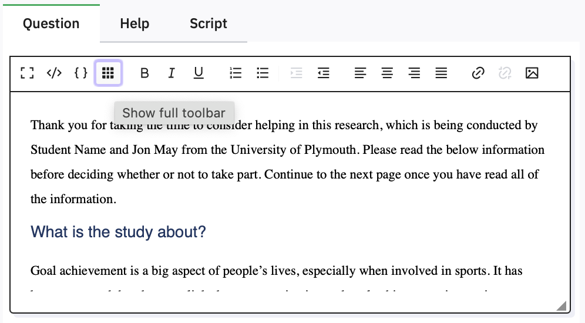
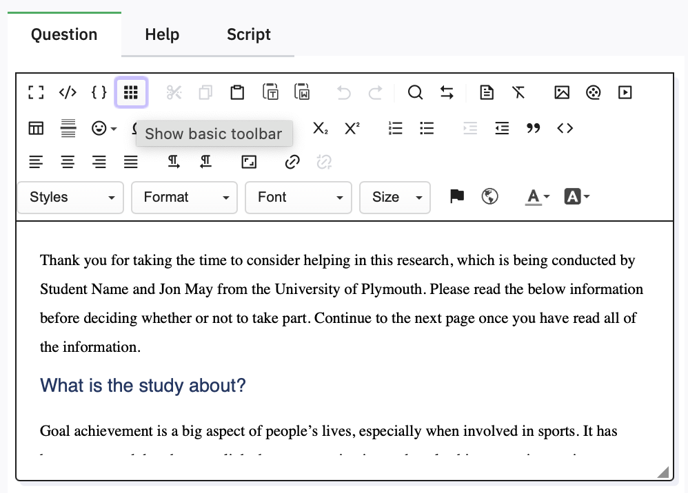
Remember to click the button whenever you have made changes. Limesurvey does not Autosave, so if you mess things up, you can Close and reopen to revert to your previous content.
2.2 Previewing
Previewing is helpful to spot any mistakes you have made in understanding the formatting, so you should do it frequently, and especially before duplicating questions or sections of your survey (to avoid having to correct all of the copies!)
2.3 Adding Images or Movies
If you ever need to add an image or movie to a question (or to Text) then there are three buttons on the toolbar that allow you to do this. They either need to be stored elsewhere on the internet (so you can provide a URL) or you can upload them to psyserver. For example, adding a simple image can be done by clicking the button. In the dialog that appears, click Browse Server to get the option and find a file on your computer to upload:
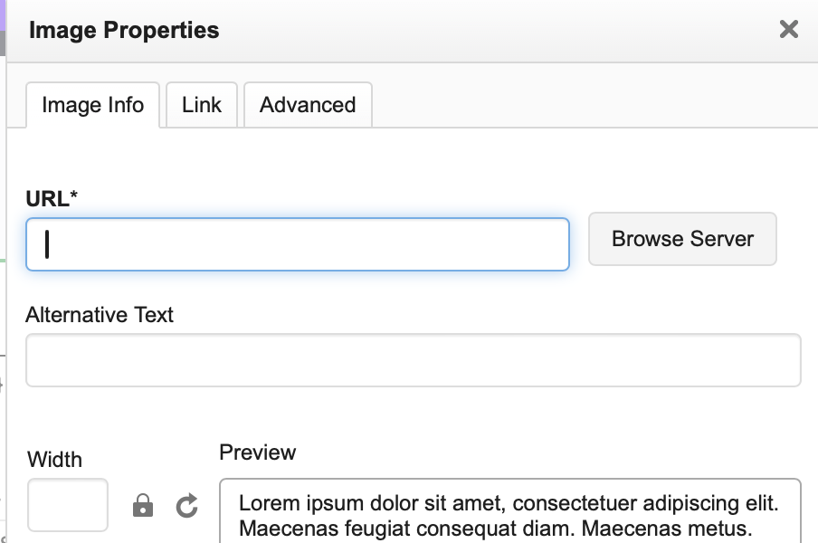
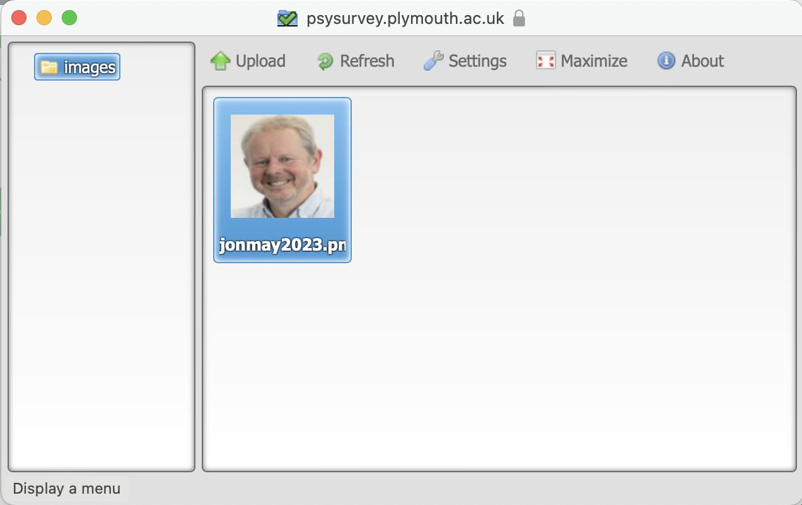
To select the image you have uploaded, double-click it. Depending on its size, it might not all show in the preview box of the Image dialog, so you can enter a sensible display width or height (the other will be calculated):
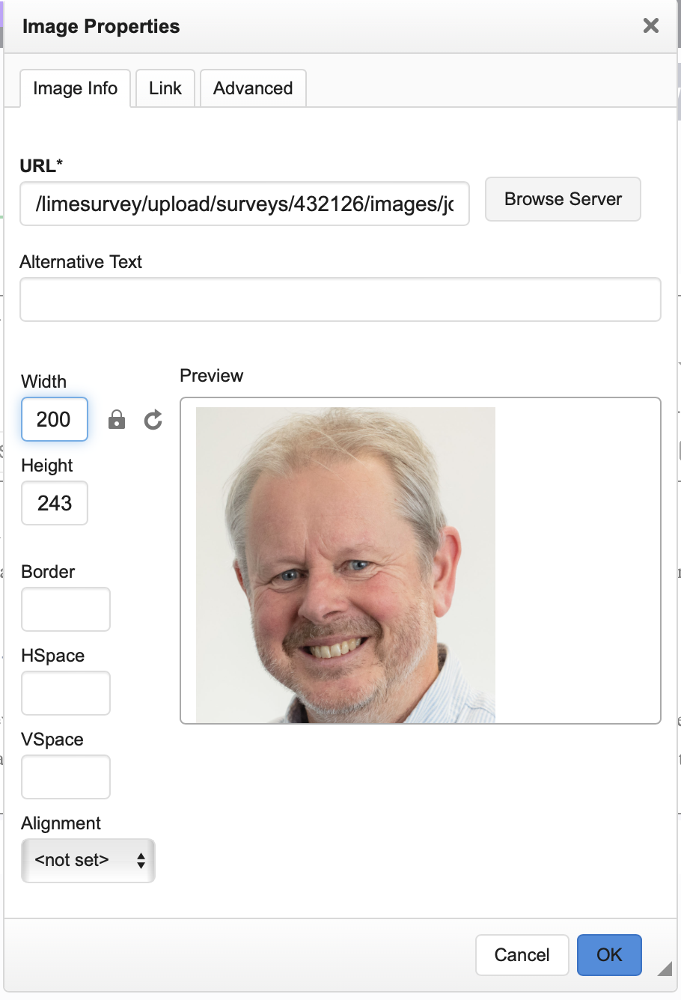
When you have added a picture to the top of your Information Text, click the green Save button and then preview question.
2.4 Adding Yes/No Questions
At the bottom of the consent page, you will need to add a single question that allows the participant to give their informed consent, or not:
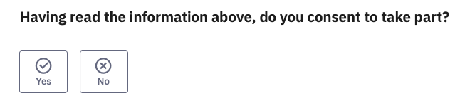
To add this new question, click the button at the left. You can then select the question type – from Mask, select Yes/No. In Code, change its name to Consent, set Mandatory to On, and then type the Question text in the large box.
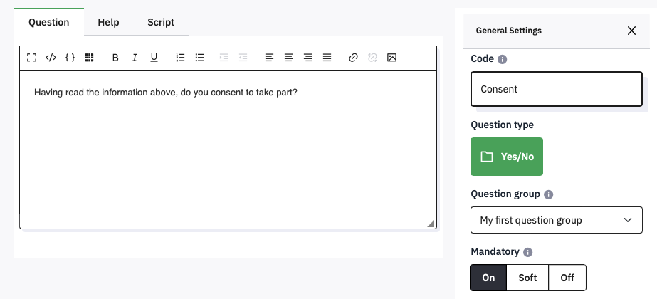
Click Save and Close, and then Preview Question.
2.5 Customising the appearance of the survey
It is not necessary for participants to see the Welcome screen with the name of your survey. To stop these being shown, click Settings and then Presentation. Here are the current default settings (the ’ mark indicates a default setting):
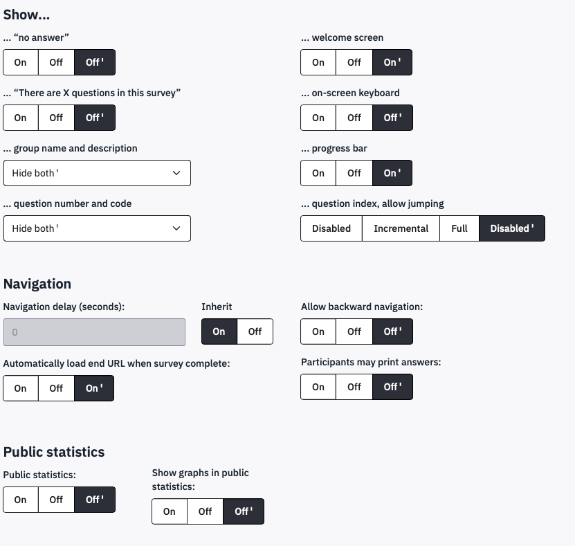
The top right option controls the display of the Welcome screen. To stop the welcome screen being shown, click Off and then Save. Return to the Structure tab to continue editing.
Another setting you may wish to change is in General Settings. The Format setting controls whether every question is shown on a separate page, or whether all the questions in a group are shown on a single page, or whether the entire survey is shown in one long page. The default setting is to start a new page for each group (Group by group), which is most useful, but if you do want to change it, now you know where. If you have the appropriate permissions, you can also change the Theme of your survey, but if you do not use the default School of Psychology theme you will have to add the logo manually.
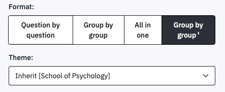